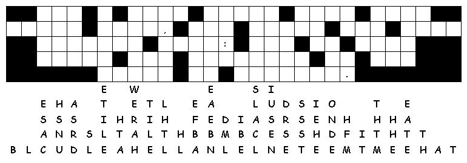

This week's lessons:(Genesis
12:1-9, Psalm
33:1-12) or (Hosea
5:15-6:6, Psalm
50:7-15, Romans
4:13-25,
Matthew
9:9-13, 18-26
Middle-School Pew-work
Abraham and Matthew both heard God calling them in a way that they could not miss. How does God call people in the twenty-first century?
_______________________________________________________________________________________
_______________________________________________________________________________________
_______________________________________________________________________________________
_______________________________________________________________________________________
_______________________________________________________________________________________
_______________________________________________________________________________________
_______________________________________________________________________________________
_______________________________________________________________________________________

Created
by Puzzlemaker
at DiscoverySchool.com
Next week: (Genesis
18:1-15, (21:1-7),
Psalm
116:1-2, 12-19)
or (Exodus
19:2-8a, Psalm
100), Romans
5:1-8, Matthew
9:35-10:8, (9-23)